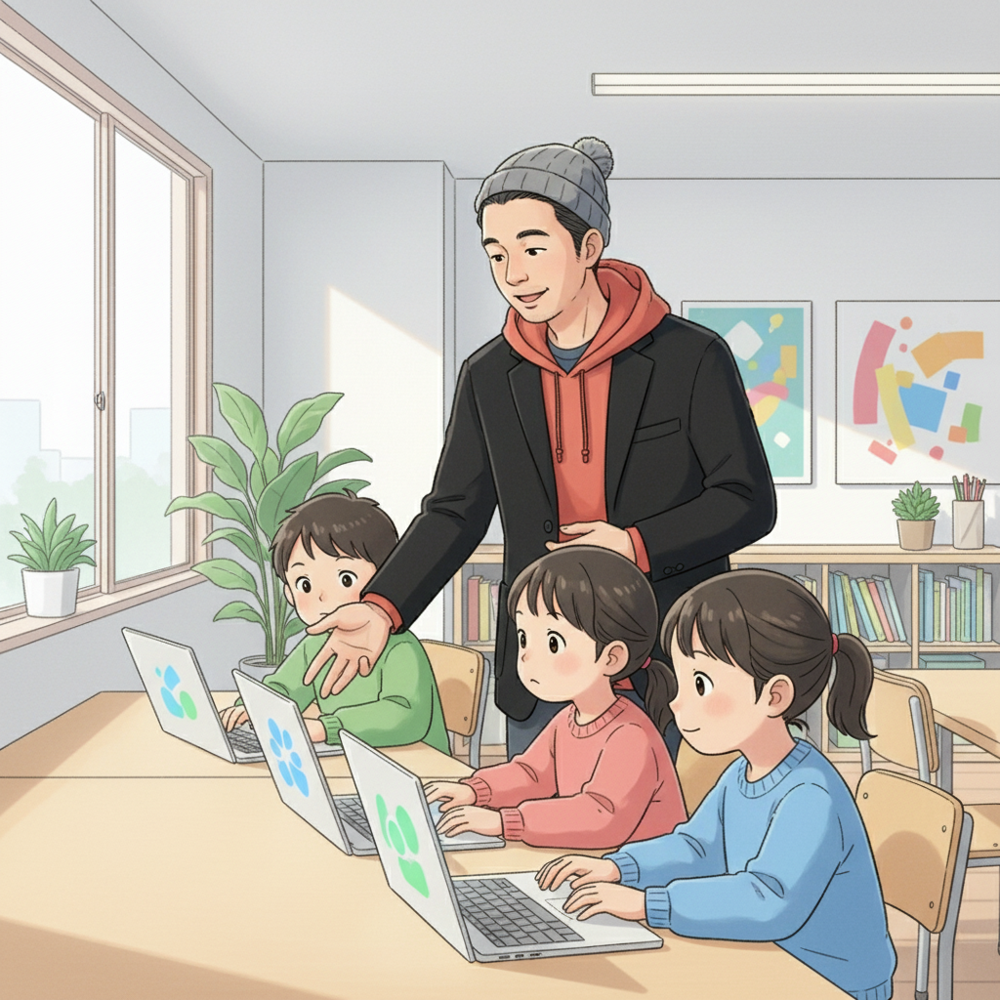
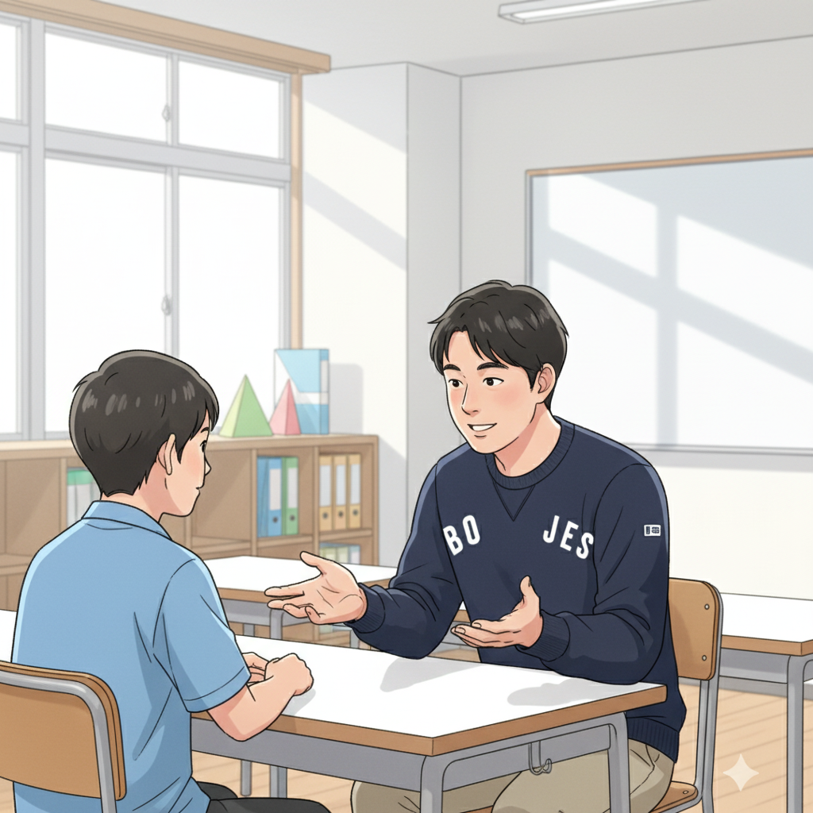

「障害」を「才能」に！ 発達特性を活かす視点とは？ (高崎先生)

皆さん、こんにちは！if塾塾頭の高崎です。発達特性を持つお子さんをお持ちの保護者の皆様、そして、自分自身に不安を感じている皆さん。もしかしたら、周りからは「できないこと」ばかり指摘されて、自信をなくしているかもしれませんね。でも、ちょっと待ってください！
発達特性は、決して「障害」ではありません。見方を変えれば、それは他の人にはない、素晴らしい「才能」の原石なんです。大切なのは、その原石を磨き、輝かせる方法を知ること。if塾では、ICTやAIなどのツールを使いながら、それぞれの個性を最大限に引き出すサポートをしています。
例えば、集中力が高い、特定の分野へのこだわりが強い、独自の視点を持っている…これらは全て、大きな強みになり得ます。大切なのは、周りと比べるのではなく、自分の特性を理解し、それを活かせる環境を見つけること。if塾は、そんな場所でありたいと思っています。
山﨑塾長の告白！ どん底からの逆転劇と才能開花 (山﨑塾長)

こんにちは、if塾塾長の山﨑です。実は僕自身も、ADHDとASDの診断を受けていて、中学時代は特別支援学級に通っていました。当時の僕は、周りとの違いに悩み、自信を失っていました。でも、高校で高崎先生に出会い、人生が大きく変わったんです。
先生は、僕の特性を「個性」として捉え、それを活かせる方法を一緒に探してくれました。例えば、興味のある分野をとことん追求できるICT教材を紹介してくれたり、苦手なことをカバーできるAIツールを教えてくれたり。少しずつ成功体験を積み重ねることで、自信を取り戻し、大学進学という目標を達成することができました。
僕の経験から言えるのは、どんな特性も、活かし方次第で才能に変わるということ。if塾では、僕のような経験を持つスタッフが、一人ひとりに寄り添い、才能開花のサポートをしています。もし今、悩んでいるなら、決して諦めないでください。必ず、光が見つかるはずです。
加賀屋さんの挑戦！ 個性的な視点をビジネスに活かす (加賀屋結眞)
皆さん、こんにちは！if塾出身の加賀屋です。高校生の時に高崎先生と出会い、15歳で個人事業主として起業しました。僕も、発達特性を持っていて、周りからは「変わってるね」と言われることが多かったんです。でも、高崎先生は、僕の独特な視点を「才能」として認めてくれました。
例えば、僕は細かい部分に異常に気づきやすい特性があります。それを活かして、ウェブサイトのバグを見つけたり、ユーザーインターフェースの改善点を見つけたりする仕事をしています。最初は自信がなかったけれど、先生や仲間の応援のおかげで、少しずつ成功体験を積み重ねることができました。
今では、自分の個性的な視点をビジネスに活かすことができて、とても充実しています。もし、自分の特性に悩んでいるなら、それを強みに変える方法を探してみてください。きっと、あなただけの才能が開花するはずです。
Y君の物語：eスポーツの世界で才能を開花させた少年 (高崎先生)
最後に、if塾に通うY君のお話をさせてください。Y君は、ASDの特性を持ち、コミュニケーションが苦手でした。学校ではなかなか友達ができず、家に引きこもりがちになっていました。しかし、彼はeスポーツの世界に才能を見出し、メキメキと実力をつけていきました。
if塾では、Y君の才能を伸ばすために、ICT環境を整え、専門的な指導を受けられるようにサポートしました。また、コミュニケーションスキルを向上させるためのソーシャルスキルトレーニングも行いました。すると、Y君はeスポーツの大会で次々と好成績を収め、自信をつけることができました。
Y君の物語は、発達特性を持つ子どもたちが、自分の才能を見つけ、それを活かして輝けることを証明しています。if塾は、Y君のように、才能を秘めた子どもたちを応援し続けます。さあ、あなたもif塾で、自分らしい成長の形を見つけてみませんか？
キーワード：ASD ICT 才能, 発達障害 AI, 発達特性 強み